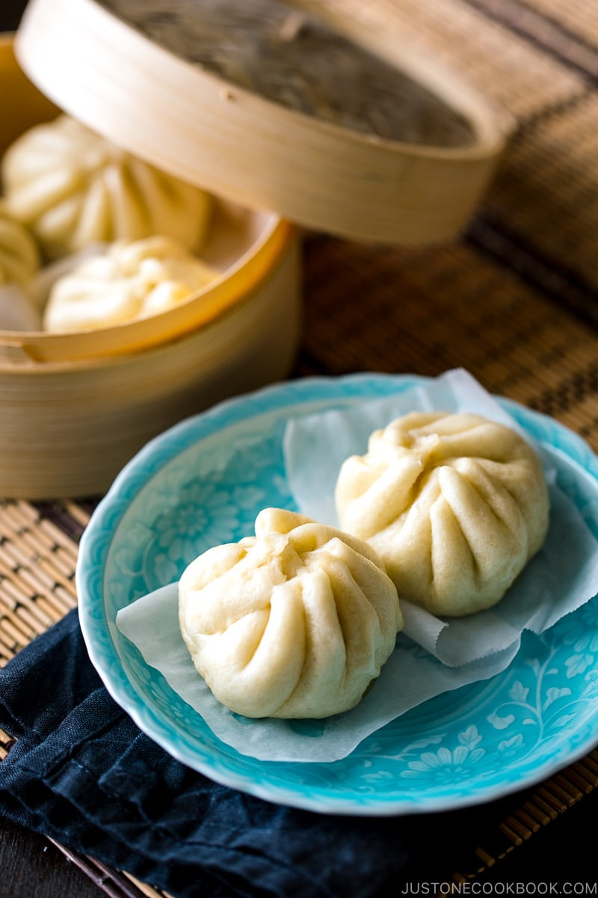

Nikuman (Steamed Pork Buns)

Description
Do you have any food that evokes a special memory of your life? One of my dearest memories is snacking on a warm steamed bun called Nikuman during my commute home from college in the cold months. For me, Nikuman (肉まん), or Japanese-style Steamed Pork Bun, was not only my favorite winter snack but also a taste of nostalgia.
I used to stop by a convenience store for my Nikuman treat; the steaming hot bun kept my hands and heart warm. By the way, Japanese convenience stores sell not only snacks and drinks, but a dizzying array of items like a mini supermarket. If you visit Japan, it's definitely one place you should take a peek inside - it's literally a “convenient” store.
Ingridients
For the dough
- 10.6 oz all-purpose flour (plain flour)
- 2 scant Tbsp sugar
- ½ tsp kosher or sea salt (I use Diamond Crystal; use half for table salt)
- 1 tsp baking powder
- 1 tsp instant yeast
- 1 Tbsp neutral-flavored oil (vegetable, rice bran, canola, etc.)
- 160-170 ml water
For the filling
- 2 dried shiitake mushrooms
- ½ cup water
- 1 green onion/scallion
- 6.3 oz cabbage
- 1 tsp kosher or sea salt (I use Diamond Crystal; use half for table salt)
- ¾ lb ground pork
- 1 knob ginger
- 1 tsp sugar
- 1 Tbsp sake
- 1 Tbsp soy sauce
- 1 Tbsp roasted sesame oil
- 1 Tbsp potato starch or cornstarch
- freshly ground black pepper
Instructions
- Gather all the ingredients.
-
Put 10.6 oz flour, scant 2 Tbsp sugar, ½ tsp salt, 1 tsp baking powder, 1 tsp instant dry yeast, and 1 Tbsp oil in a large bowl. While mixing the mixture with chopsticks or a wooden spoon, slowly pour 160-170 ml water into the mixture and mix until incorporated.
-
Lightly dust your hand with flour to keep the dough from sticking too much. Use your hand to knead the dough, pressing it down and reshaping it. Form it into a ball.
-
Sprinkle the working surface with flour. Transfer the dough onto the surface and start kneading. This is how I knead. First, press the top half of the dough, pushing forward slightly. Then pull it back and fold it in half and press it forward again with the heel of your hand twice. Then turn the dough slightly and repeat this process for 10-15 minutes or until the dough becomes smooth and silky. Sprinkle the dough with a little bit of flour at a time to help decrease the stickiness.
-
Form the dough into a smooth, round shape, gently tucking loose ends underneath. Coat the bottom of the bowl with oil and place the dough in the bowl. Cover it with plastic wrap and put it in a warm place until the dough doubles in size, about 30-60 minutes.
-
While you’re waiting for the dough to rise, make the filling. First, soak the dried shiitake mushrooms in ½ cup water. Place something heavy on top so the whole shiitake will be submerged. Set aside for 10-15 minutes.
-
Thinly slice the scallion. Remove the tough core of the cabbage and chop into 1” (2.5 cm) pieces.
-
Sprinkle the chopped cabbage with 1 tsp salt to draw out excess water.
-
Once shiitake mushrooms are hydrated, squeeze the liquid out, cut off the tough stem, and mince the mushroom tops.
-
In a large bowl, combine ground pork, scallion, and shiitake mushrooms. Squeeze the excess water out from the cabbage with your hands and add it into the bowl.
-
Grate ginger and add all the seasonings (1 tsp sugar, 1 Tbsp sake, 1 Tbsp soy sauce, 1 Tbsp sesame oil, 1 Tbsp potato/corn starch, and freshly ground black pepper).
-
Knead the mixture well until it is well combined and looks pale and sticky. Set aside (or cover with plastic wrap and keep in the fridge) until the dough is ready.
-
Once the dough has doubled in size, dust the working surface with flour and divide the dough in half and then roll each piece of dough into a log. Cut each log into 5 even pieces and then cut each piece in half. You can divide into fewer pieces of dough to make bigger buns. It's also easier to work with smaller dough to make nice pleats when you wrap because it's hard to hold a big dough and filling in one hand. Form each piece of dough into a ball and dust the dough balls with flour to avoid sticking to each other. Space each ball apart and cover loosely with a damp kitchen cloth to avoid drying out. Let them rest for 10 minutes.
-
Take a ball of dough and flatten it with your palm. Then roll it with a rolling pin into a round sheet. Here’s how I roll the dough. Hold the top of the dough with the left hand and use a rolling pin to roll out the dough with the right hand. You only need to roll up and down on the bottom half of the dough. After rolling 1-2 times, rotate the dough about 30 degrees with the left hand. Repeat this process until the dough becomes thin. The center of dough should be thicker than the edge.
-
Scoop 1 ½ Tbsp of filling (I use this 1 ½ Tbsp cookie scoop) and place in the center of the dough.
-
Hold the dough with the left hand and seal the bun using the right index finger and thumb. First, pick up a corner of the dough with your right index finger and thumb and pinch together (left picture). Without moving your thumb, use your right index finger to pick up the dough and pinch it with your thumb while rotating the dough clockwise with your left hand (right picture).
-
Repeat this process about 10-12 times (= 10-12 pleats) until you seal the last part of the dough by pinching it tightly. Here are some tips: your left thumb should hold down the filling and use your left fingers to turn around the wrapper. Use your left index finger to help to pleat. Also, lift up the pinched pleats slightly while you make the new pleat so the filling stays inside the dough.
-
Once you finish sealing the last part of the dough, twist the pleats further with your right index finger and thumb to maintain a tight seal. If you’re left-handed, reverse the directions.
-
Easy Alternative Option: Wrap the filling by bringing the dough up around the meat to the top, forming little pleats with the excess dough, then slightly twisting the dough to close it and pinching it firmly to join the edges.
-
Place the bun on a piece of parchment paper that fits the bun (for small size, 3” x 3”). Cover the finished buns with plastic wrap and repeat this process with the rest of the dough. Let the buns rest for 20 minutes.
-
Bring water to boil and set a steamer. Once the water is boiling, place the buns and parchment paper in the steamer tray leaving about 2” between each bun (buns will get larger while being steamed). Close the lid and steam over high heat for 10 minutes (10 for small buns, 13 for medium, 15 for big). If you use a regular pot for steaming, wrap the lid with a kitchen cloth to prevent the condensation (formed on the lid) from dripping onto the buns. Enjoy immediately.